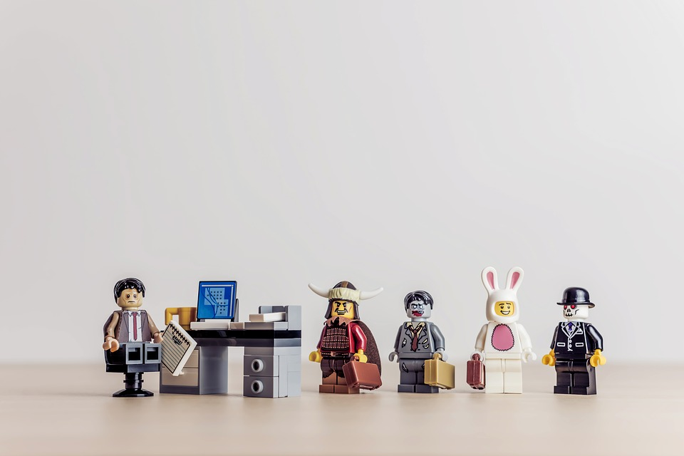

Legal action is when there is a judicial proceeding brought by one party against another in order to...
Software piracy is the practice of illegally downloading and distributing copyrighted content digitally...
Go back home Go back home Go back home Go back home Go back home Go back home Go back home Go back home Go back home
Today data is valuable and results in countless issues with companies and the handling data.
Inclusivity is when software is is accessible and does not exclude any section of society. This includes accessibility for different countries, languages, cultures, disability, etc.
Scroll down for more information
Software developers have the responsibility to ensure that software is inclusive. This means software has to be accessible to a variety of users as it will provide a higher likelihood of a significant market share covering demographics from the visually impaired, people of lower socioeconomic backgrounds to different language backgrounds. In specific, developers will need to cover:
Culture - Taking into account a person’s language, beliefs of a person allowing them inclusivity to a piece of software. For example, some cultures have various ways they represent the date dd/mm/yyyy or mm/dd/yyyy, some also have different symbols in writing their name meaning the encoding format UTF-8 should not be used to allow access to various symbols.
Economic background - Developers have to take into account the price of the software, is it accessible to everyone including low socioeconomic backgrounds? Is there expensive licencing? Software being higher in expenses result in lower inclusivity and less access to the software. Higher expenses can also lead to an increase in piracy for the software, which results in loss revenue and legal actions to take place.
Disability - It is important for developers to take into account people’s disabilities physical and mental. People with visual impairments such as color blindness need options in order to create contrast and be able to distinguish aspects of a software. The possible use of screen reader software should be used to help those in need. In the physical world if someone is a thalidomide there will be a requirement to incorporate a sort of sensor or voice activation to be able to use a piece of software.
 Different people have different needs. This is why software needs to be inclusive of people's different situations. Without it, there is less revenue and less innovation with less people being able to access certain technology and softwareRegion lock is a class of digital rights management preventing the use of a certain product or service, such as multimedia or a hardware device, outside a certain region or territory. Region locking serves a purpose in inclusivity with price discrimination, which is selling a piece of software such as a game at different prices based on different countries which would increase sales. Thus, region lock is involved with banning cross-removal trading removing the issue of people buying games at a cheaper price by purchasing in a different country.
However, the problem with region lock is especially in the case for Nintendo was with their portable consoles, such as the Nintendo 3DS which had a strict region lock which that reduced inclusivity in being able to play games from different countries. As a result, with the release of the Nintendo Switch in 2017, they made the console not have region lock. This meant users could create profiles that is Japanese in order to access Japanese exclusive games, thus increasing inclusivity in removing restrictions of region lock. This feature also increases sales and interest for consumers to access games outside their region.
This issue was especially prevalent in the launch of the Nintendo Switch, where the Westernised countries (USA, UK, Australia, etc.) received 5 games on release, whereas Japan had significantly more releases including classic Konami games.
Thus, it is clear the removal of region lock in the Nintendo Switch help increase inclusivity, consequently increasing sales